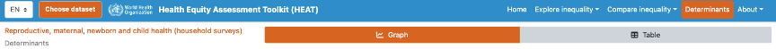

Determinants
Under 'Determinants', you can identify the association between the setting average of a health indicator and the setting average of a determinant indicator in various settings of interest. Data of both the health indicator and determinant can be visualized in different graphs and tables. To access the visualizations, hover over and click 'Determinants'. The selected view will be highlighted in orange.

💡 TIPS for exploring the association between health indicators and determinants
✅ It is recommended, when interpreting the graph and regression line, to consider that estimates correspond to setting averages (both for health indicator and determinant) and results are prone to ecological fallacy.
✅ It is recommended to note the date for the indicator and the determinant indicator as they might differ.